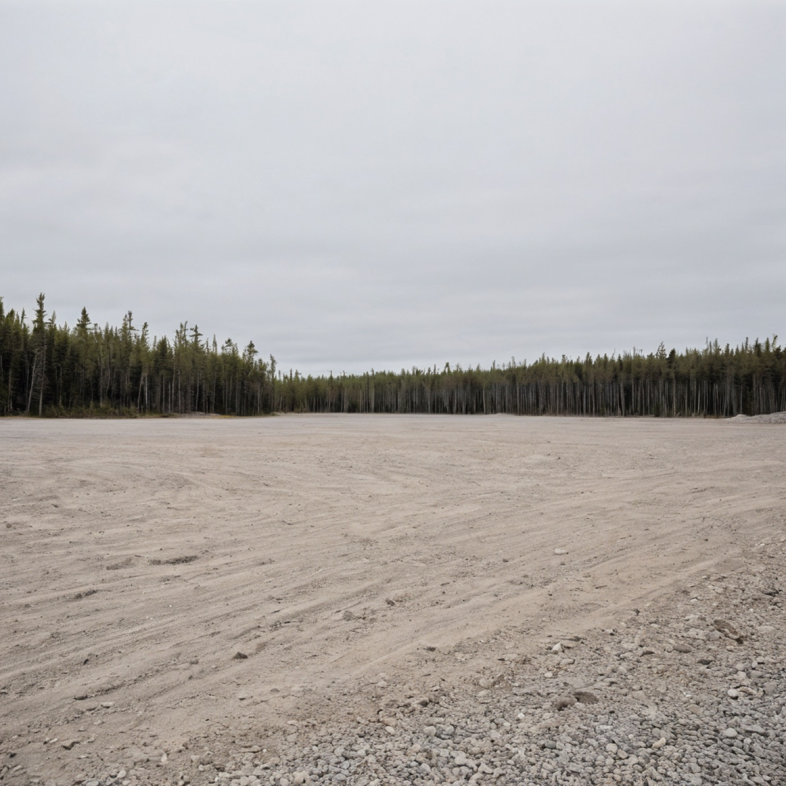

PLATEI
Graded apron, designation pending.
A flat scraped surface, drained, ready, marked with no markings. The texture of a place that has been prepared without being committed.
The empty state is doing more rhetorical work than the loaded state ever will. It teaches you what kind of thing the apron intends to be while pretending to just sit there.
Compacted gravel
Recent (≤ 90 d)
None as of capture
Undeclared
Pre-painting